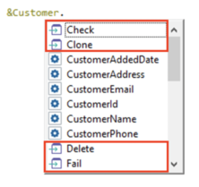

A set of methods is available to apply to Business Component variables, in order to execute operations to them or from them.
When you type a dot (.) following a variable name based on a Business Component type, GeneXus offers methods to be applied to the variable:
